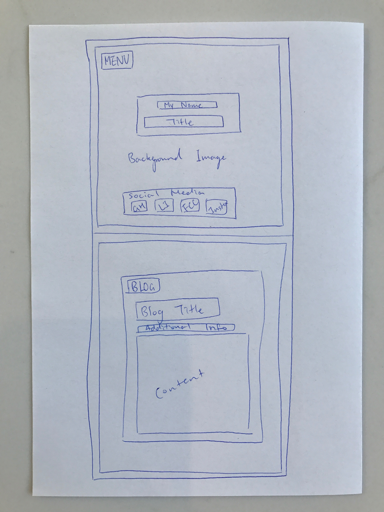
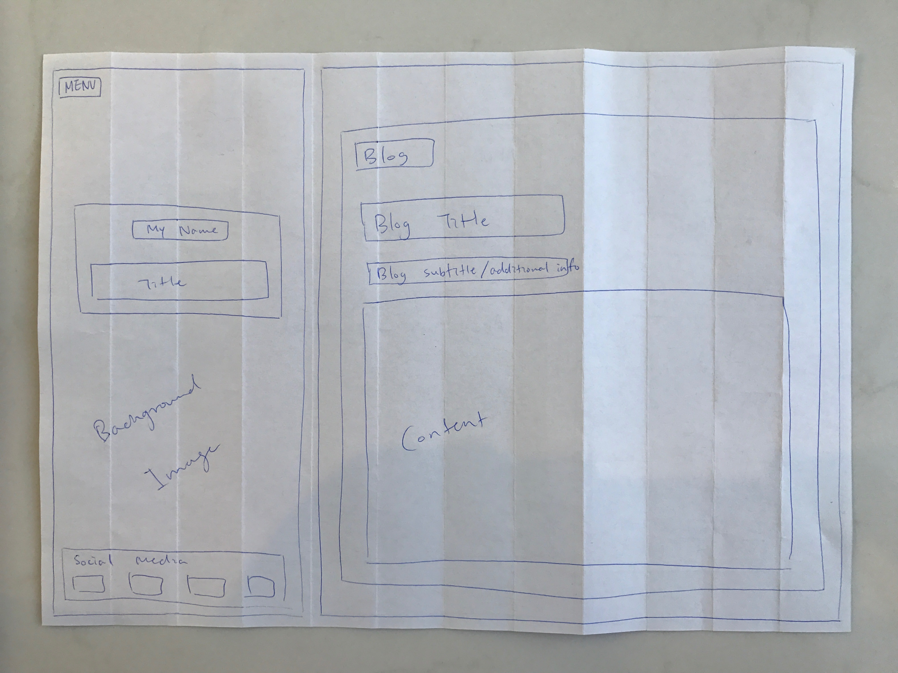

A responsive site looks nice and functions well on screens of different sizes. Nowadays there are many kinds of handheld devices as well as desktops or laptops with varying screen sizes. In fact, while the time spent browsing web on desktop is decreasing, people spend more and more time browing web on mobile devices. It means we as developers need to make sure the sites we make work well on all devices.
When we make a website, we can build it to suit desktop screen, and then make the site become responsive, deleting some features so the site works better on mobile devices. Or, we can build the site for mobile screen sizes, and then make it look and function nicer on bigger screens. The former is called "graceful degradation", and the latter "progressive enhancement".
For graceful degradation, we need to decide what part of the site to remove or make simpler to make it work better on mobile screens. On the other hand, for progressive enhancement, we carefully select what to include in our mobile version of the site and when we want to make a desktop version, we can work on which part to make more enhanced. With progressive enhancement, the product has more relevant and enhanced content.
Frameworks help developers build sites more easily as it has standardised rules ready to use to solve problems. They often include tools that can be used to build common website features so the devs don't have to write similar codes by themselves.
A wireframe is a design plan of your website. We use it to show our clients the basic structure of the site without focusing too much on details such as colours and fonts.
 I found positioning quite difficult especially when I tried to make the site responsive. I ended up deleting the picture of me from the index page for mobile version, and add it only when the screen size increases.
I also think the framework wasn't very useful for the design I had where I divided the screen into two parts, left side being the cool menu screen, while the right side showing the page content. It would be more helpful for me to practice with a framework next time I build a new, undivided site.
Posted on 11 March 2017